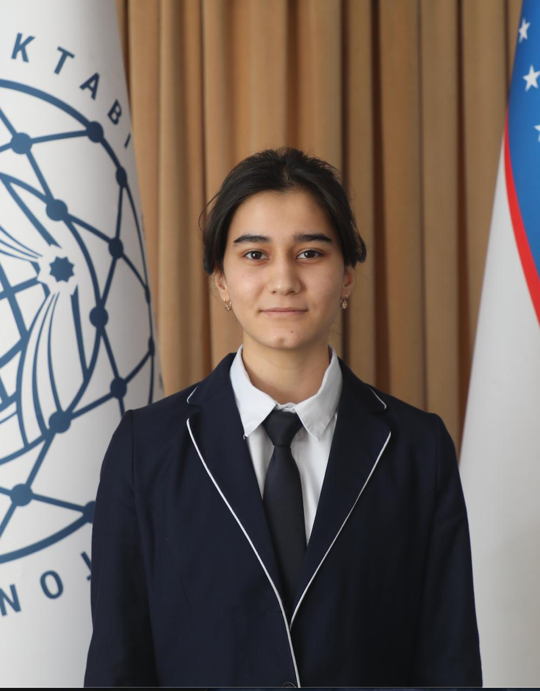
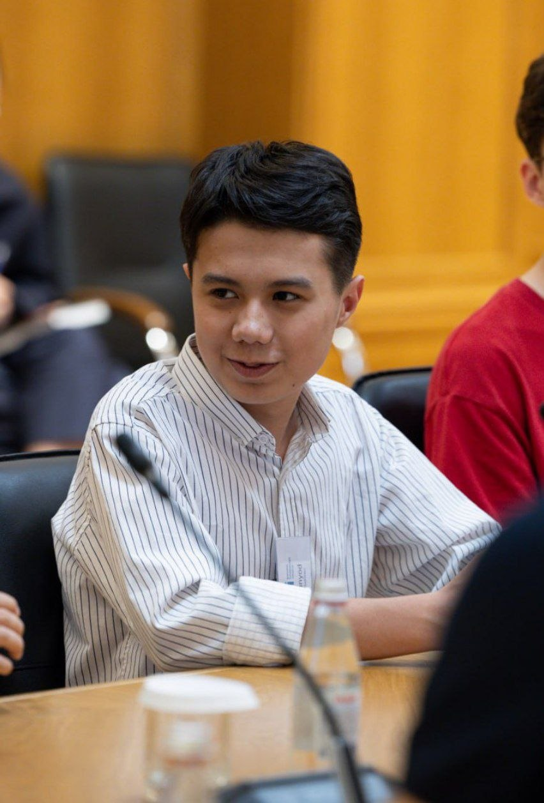

Shakhriniso Kholboeva
Founder & Director
Presidential School in Karshi, Uzbekistan
CAEP 2026 — Inaugural Edition
Celebrating the young economists who explored the economic questions shaping Central Asia in the inaugural Central Asia Economics Prize.
183 submissions · 34 countries and territories · 12 finalists · Four economics categories
2026 competition completed.Winners announced October 24, 2026
CAEP 2026 · Ceremony Archive
The inaugural Central Asia Economics Prize concluded with the Winners Announcement Ceremony on October 24, 2026, recognizing outstanding young economists from around the world.
Following 183 submissions from 34 countries and territories, the ceremony announced the winners across four economics categories and the overall winner.
Ceremony completed. Winners announced October 24, 2026.
CAEP 2026 — Inaugural Edition
The inaugural Central Asia Economics Prize is complete. From 183 submissions across 34 countries and territories, twelve essays reached the Final Round across four economics categories.
The winners were announced at the online Winners Announcement Ceremony on October 24, 2026. The results and competition archive are now available.
Winners announced October 24, 2026Our Global Reach
In its inaugural year, the Central Asia Economics Prize brought together young thinkers from across the world to examine the economic challenges shaping Central Asia.
Submissions received · Select a country or marker, or use the country list below.
Historical submission data · 2026
01 — About
The Central Asia Economics Prize is a free economics essay competition for high-school students aged 14–19.
The inaugural 2026 edition welcomed students worldwide, with all essays required to engage directly with the economic context of Central Asia. Participants chose one of four economics questions and submitted an individual essay of no more than 1,200 words in English.
The competition encourages students to develop evidence-based arguments, engage with competing perspectives, and apply economic reasoning to real problems.
Organizing Team
The organizing team founded and runs the Central Asia Economics Prize. It is separate from the preliminary reviewers and final judging panel.

Founder & Director
Presidential School in Karshi, Uzbekistan

Co-Founder & Academic Lead
Presidential School in Karshi, Uzbekistan
Co-Founder & Operations Lead
Presidential School in Samarkand, Uzbekistan
Graphic Designer
Presidential School in Samarkand, Uzbekistan
Historical competition record
The inaugural edition is complete. The following entry requirements, essay questions, rules, judging process, and timeline are preserved as the 2026 competition record.
02 — 2026 Entry Archive
The inaugural edition was open to high-school students aged 14–19 at the submission deadline. Students worldwide were eligible, with every essay required to engage directly with Central Asia.
Central Asia primarily includes Kazakhstan, Kyrgyzstan, Tajikistan, Turkmenistan, and Uzbekistan. Students are not required to discuss all five countries.
03 — 2026 Question Archive
Participants chose one of the four official categories and answered its question. Each invited careful economic reasoning, credible evidence, and an independent response grounded in Central Asia.
04 — 2026 Rules Archive
05 — Judging
Essays were anonymized for review. Following initial screening and preliminary review, twelve shortlisted essays were evaluated independently by the final judging panel. The 2026 judging process is complete.
Assessment principles
Strong essays will not simply describe an economic issue. They should develop a clear argument, use relevant evidence, engage seriously with competing explanations or counterarguments, and reach a well-supported conclusion.
CAEP 2026
Thank you to the final judging panel for evaluating the inaugural edition’s shortlisted essays.
06 — Awards
Outstanding participants may receive opportunities for publication, academic recognition, and further engagement with economists and researchers.
07 — Publication
Full winning essays are not yet available. Complete works will be published only with their authors’ explicit permission.
08 — Academic connections
One objective of CAEP is to help promising students interact with the wider economics community.
Where possible, outstanding participants may be introduced to academics or policy professionals whose work relates to their interests. This may lead to discussion, feedback, reading recommendations, guidance on future writing, or potential future collaboration.
09 — 2026 Timeline Archive
October 24, 2026
10 — Official Results
The winners of the inaugural Central Asia Economics Prize were announced on October 24, 2026. Explore the Overall Winner, Category Winners, Honorable Mentions, and finalist recognition.
11 — Submission Archive
Submissions for the inaugural Central Asia Economics Prize 2026 closed on 24 September 2026 at 23:59 Uzbekistan Time (UTC+5). The four essay questions and original entry rules remain available as part of the competition archive.
12 — FAQ
13 — Contact
Questions about eligibility, submissions, judging, or competition rules are welcome.